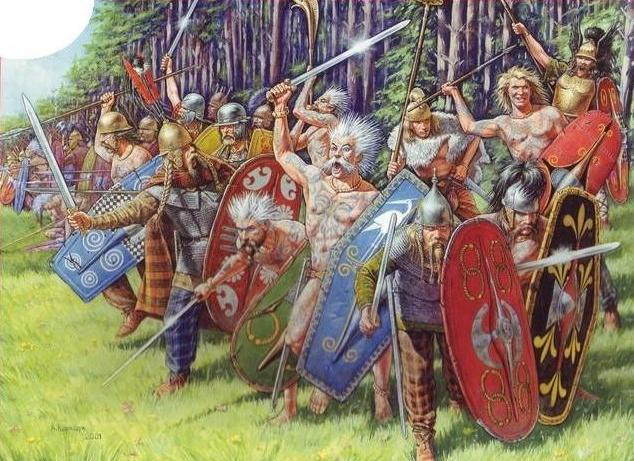
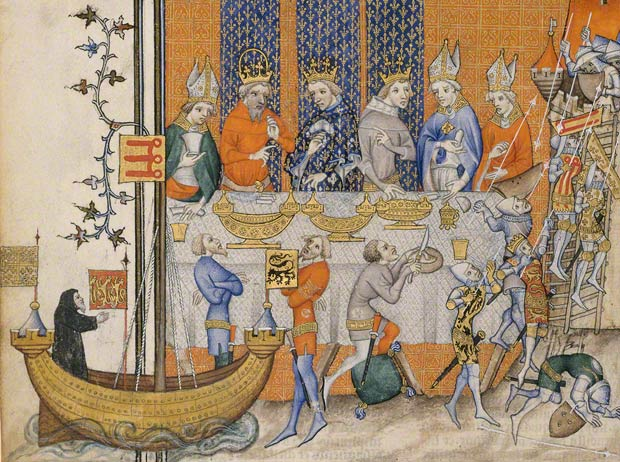

Ancient France
The history of ancient France dates back to Celtic Gaul, which was eventually conquered by the Romans...
Middle Ages
During the Middle Ages, France saw the rise of powerful monarchs and the formation of early kingdoms...
Renaissance France
The Renaissance era was a time of cultural flourishing, as well as political consolidation...
Modern France
In modern times, France has become a leading global power, known for its rich culture, political influence...